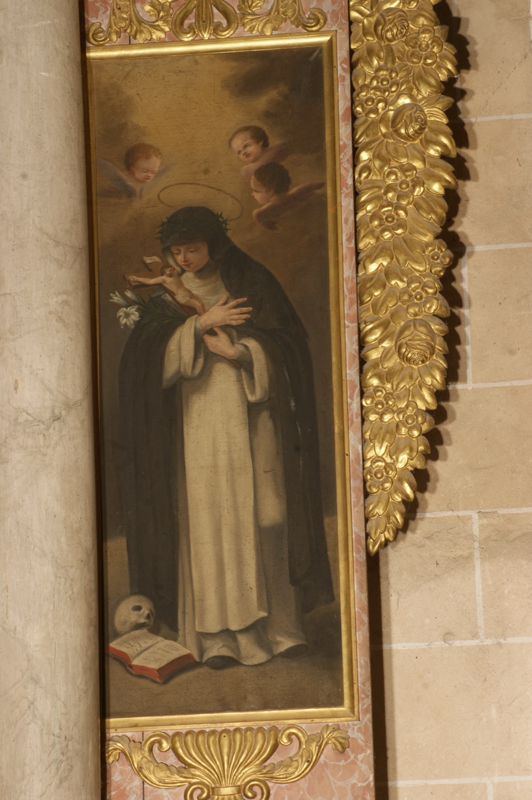

Santa Catalina de Siena (1347-1380) va ser una de les grans místiques del seu temps i una destacada escriptora i predicadora, mèrits pels quals va ser nomenada Doctora de l’Església. Als 18 anys ingressà en una comunitat de terciàries dominiques, és a dir, de dones que seguien la regla de l’Orde dels dominics sense ser monges de clausura. Durant anys visqué pràcticament reclosa, portant una vida de penitència i sacrifici dedicada a la pregària i al dejuni, fins que, arran d’una visió mística, començà a dedicar-se activament a tenir cura dels malalts. En una visió posterior, Jesús li encarregà treballar per la pau i partir de llavors, dugué a terme una intensa activitat pública. Entre altres intervencions, convencé el papa Gregori XI perquè retornàs la seu papal d’Avinyó a Roma.
En aquesta pintura vesteix hàbit blanc amb capa i vel negres, propi de les terciàries dominiques. Porta una corona d’espines en record d’una visió en què Crist li donà a triar entre una corona d’or i una d’espines, i naturalment ella trià aquesta darrera. Amb les mans sosté un lliri blanc i un crucifix, com a símbol de l'equilibri entre la seva puresa virginal i el seu fervent amor per Crist. El llibre obert als seus peus simbolitza la seva saviesa espiritual, i la calavera recorda les moltes hores que passà meditant sobre la brevetat de la vida terrenal. També pot fer referència a la llegenda segons la qual els sienesos, volent recuperar el cos de la santa enterrat a Roma, n’agafaren el cap i se l’endugueren dins una bossa. Quan uns guàrdies els detingueren i registraren la bossa, la trobaren plena de pètals de rosa i els deixaren marxar. En arribar a Siena, el cap tornava a ser dins la bossa, i avui en dia s’exposa a l’església de San Domenico.